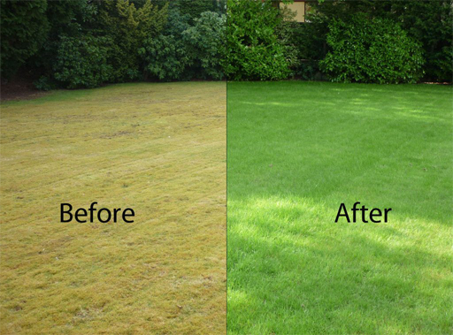
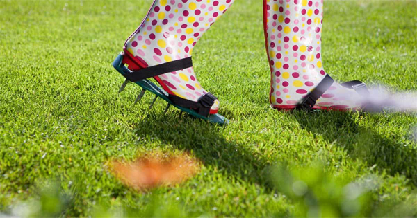
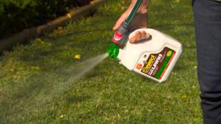
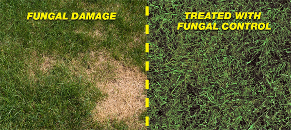
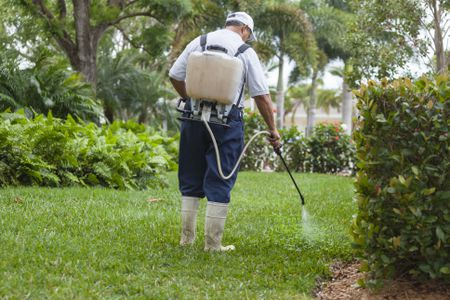

Lawn Renovation
For a full lawn renovation we will start by scarifying which will lift out moss and thatch.
Hit it with a powerbrush to remove debris.
We will then use the Hollow tine aerator to aerate and relieve compaction.
Then apply lawn seed and fertiliser and with enough time your lawn will look completely renewed and revitalised.
Spiking
When spiking a garden, we add small holes all over the lawn using a specialist machine or spiked shoes, this allows for water to reach further down into the soil and reach the roots of your lawn allowing for growth and nourishment of healthy grass.
Hydration
During dry periods the soil of your lawn becomes hydro-phobic meaning it repels water, meaning that no matter how much you water your lawn if will stay dry and brown. A special treatment will be spread around then watered to be effective.
Fungicide & Insecticide
Fungus is extremely common in lawns across the country, and though the majority of strains of fungi are harmless, a few can cause your grass to become patchy, experience stunted growth and develop brown and slimey patches. Expertly crafted fungicide treatments can be used to combat these problems.
Weed Control
Lawn weeds come about from surviving regular mowing and spread by seed or creeping stems. A non-chemical means of comabtting weeds is by digging them out, when this is not feasible chemicals can be used. These can be highly dangerous to pets such as dogs and cats so caution is advised
Do you have a question about any of our services?
Contact Us At
Telephone: 07234632274
Email: freshstrims@mail.com
63 Gee St
London
EC1V 3RS